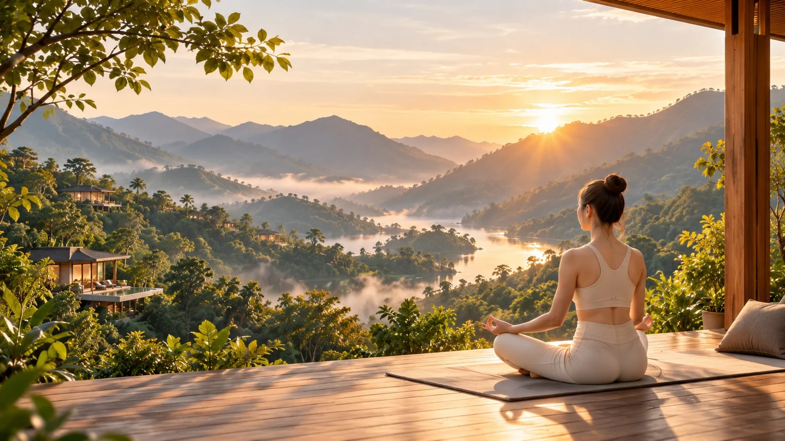
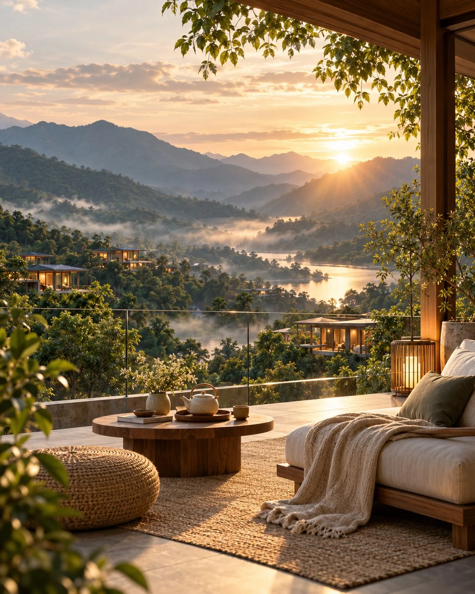

3 ngày 2 đêm
Hành trình thanh lọc thân tâm
Ba ngày được thiết kế như một nhịp chuyển chậm: rời tiếng ồn, đưa cơ thể về trạng thái nghỉ sâu rồi xây lại một lịch sinh hoạt nhẹ nhàng trước khi trở về thành phố.
Những khoảng trong ngày
Hoạt động tập trung vào những thời điểm cơ thể dễ tiếp nhận nhất: sáng sớm, trước bữa ăn và khoảng chuyển sang buổi tối.
Lịch trình dưỡng sinh 3 ngày 2 đêm
Thời gian dưới đây là khung vận hành chính; các buổi vận động và trị liệu có thể điều chỉnh nhẹ theo thời tiết và thể trạng của nhóm.
Chọn đợt khởi hànhBa ngày tại thung lũng
| Chiều ngày 1 | Nhận biệt thự, trà thảo mộc và đi bộ rừng. |
|---|---|
| Tối ngày 1 | Bữa tối dưỡng sinh, thiền chuông trước khi ngủ. |
| Sáng ngày 2 | Yoga bình minh, bữa sáng ấm, nghỉ không màn hình. |
| Chiều ngày 2 | Trị liệu thảo mộc, thiền dẫn và bữa tối theo mùa. |
| Sáng ngày 3 | Thở, yoga nhẹ, bữa sáng và ghi nhịp cá nhân. |
| Trưa ngày 3 | Bữa trưa nhẹ, trà chia tay và trả biệt thự. |
Để kỳ nghỉ vừa với cơ thể bạn
Người hướng dẫn sẽ giảm hoặc thay thế động tác nếu bạn cần một nhịp vận động nhẹ hơn.
Thông tin dị ứng, chế độ ăn chay hoặc thực phẩm cần tránh được ghi nhận trước ngày đến.
Đây là lúc được nghỉ.
An Nhiên Valley không xây trải nghiệm như một khóa huấn luyện sức khỏe. Không có chỉ tiêu hoàn thành và không có lịch hoạt động dày từ sáng đến tối. Giá trị nằm ở cách không gian, bữa ăn và nhịp sinh hoạt phối hợp để giảm dần kích thích.
Xem ngày nghỉ còn trốngÁnh sáng tự nhiên
Các buổi sáng ưu tiên không gian hướng đông, hạn chế ánh sáng nhân tạo trong giờ đầu sau khi thức dậy.
Khoảng nghỉ thật sự
Không lấp đầy thời gian trống bằng hoạt động phụ; khách có thể đọc, ngủ hoặc chỉ ngồi nhìn thung lũng.
Nhịp tối dịu lại
Sau bữa tối, khu lưu trú giảm ánh sáng và hạn chế hoạt động tập thể để cơ thể chuẩn bị cho giấc ngủ.

Dành ba ngày để thật sự nghỉ
Chọn ngày khởi hành, không gian lưu trú và để lại thông tin cơ bản. Đội ngũ An Nhiên sẽ xác nhận lại nhu cầu ăn uống và thể trạng trước chuyến đi.